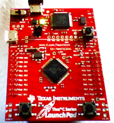

QP/C++
7.3.4
Real-Time Embedded Framework
The ultra-simple Blinky example is the embedded systems' equivalent of the venerable "Hello World!" program, that is, the simplest possible working QP™ application that does "something". In the case of Blinky, this "something" is blinking an LED at the rate of 1Hz, where an LED turns on and remains on for 0.5 seconds on then turns off and remains off for 0.5 seconds.

The Blinky example is provided for other supported boards as well. Please look for examples named blinky_<board-name> in the qpcpp/examples/examples directory (e.g., qpcpp/examples/arm-cm/blinky_ek-tm4c123gxl for the EK-TM4C123GXL board (TivaC LaunchPad)).
The ultra-simple Blinky application, which consists of just one active object named Blinky, is intentionally kept small and illustrates only the most basic QP features, such as:
Built-in kernels:
Build configurations:
The details of the Blinky application are describe in the Quantum Leaps Application Note Getting Started with QP™ Real-Time Embedded Frameworks.